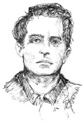

Ludwig Wittgenstein (1889-1951), Avusturya, Viyana’da varlıklı bir ailede 1889 yılında dünyaya geldi. Gottlob Frege’nin (1848-1925) tavsiyesi üzerine Bertrand Russell (1872-1970) ile matematiğin temellerini çalışmak üzere Cambridge Üniversitesi’ne gitti. 1914’te I. Dünya Savaşı patlak verdiğinde Wittgenstein, orduda görev almak için Avusturya’ya döndü. Savaşın siperlerinde ve sonraları savaş kampında bir mahkûm olarak Wittgenstein, Tractatus Logico- Philosophicus (1921) adlı ilk kitabını yazdı. Ateşkesin ardından Wittgenstein, ölümünden sonra basılan Felsefi Soruşturmalar (1953) adlı ikinci ve son kitabı hâline gelen el yazmalarını kaleme aldığı, Cambridge’te felsefe dersleri verdiği İngiltere’ye geri döndü.

Wittgenstein’ın ilk kitabı olan Tractatus Logico – Philosophicus (“Mantıksal-Felsefî İncelemeler”) bir dizi numaralı önermeden oluşuyordu. Dilin, belli bir mantıksal yapısının olduğunu ve bu yapının dünyanın yapısına ayna tuttuğunu iddia etti. Wittgenstein, bir önermenin gösterdiği ile söylediği şeyi birbirinden ayırdı. Önermeler dünyanın kısmi bir şekli olduğunu söyler, ama düzenlemelerinde dünyanın yapısının ne olduğunu bize gösterirler. Mantık, önermelerin yapısı hakkındadır. Herhangi bir şey söylemez, ama dilin ve dünyanın yapısının ne olduğunu bize gösterir. Wittgenstein, çoğu felsefî sorunsalın sadece gösterilebileni söylemek için yanlış yönlendirilmiş girişimden çıktığı sonucuna vardı. Filozofların, mantık yoluyla yapıyı görünür kılmaktan ziyade dünyanın belli bir yapısı olduğunu söylemeye giriştiklerinde sorunlarla karşılaştıklarını ileri sürdü.
Felsefi Soruşturmalar adlı son dönem eserinde Wittgenstein, felsefenin neden yanlış yönlendirildiğine inandığı üzerinde ayrıntılara indi. Felsefî sorunların dil hakkındaki kafa karışıklığından ortaya çıktığına inandı. Zorlukların sadece kelimeleri standart olmayan şekillerde kullandığımızda veya kullanılabildikleri çeşitli şekilleri ihmal ettiğimizde ortaya çıktığını savundu. “Felsefe, dil aracıyla zekamızın büyüsüne karşı bir çarpışmadır.” diye yazdı. Böylelikle Wittgenstein, önemli olan şeyin dilin anlamını açıklığa kavuşturmak olduğu, iyileştirici bir felsefe anlayışını savundu.
EK BİLGİLER:
1. Wittgenstein, “Tractatus” eserini üstü örtülü bir notla “Üzerine konuşamadığımız şeyler hakkında susmamız gerek.” diye sonlandırır.
2. Wittgenstein, Martin Heidegger ve Adolf Hitler, hepsi de 1889’da doğdular.